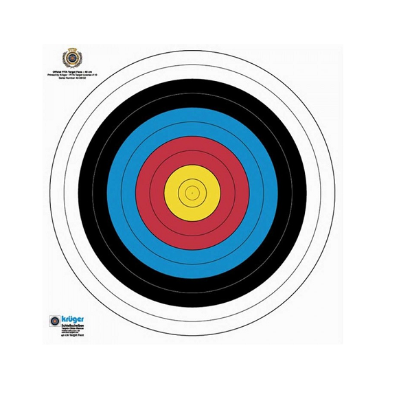

Je hebt natuurlijk verschillende soorten wedstrijden, want je kan bijvoorbeeld buiten of binnen schieten en ook kan je op verschillende afstanden staan. Bij een wedstrijd schiet je op een blazoen. Elk vak is een aantal punten waard. Je telt van binnen naar buiten van 10 naar 0. De binnenste twee ringen zijn dus 10 punten en de buitenste ring is 1 punt.